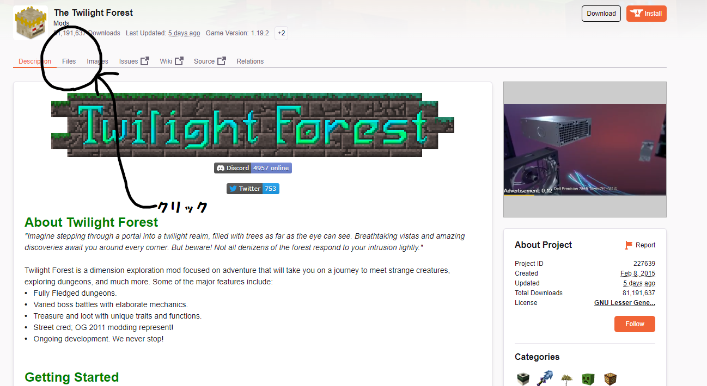

MOD導入方法・サーバーアクセス方法
- ①MOD導入方法
- ②サーバーアクセス・Dynmap利用方法
①MOD導入方法
①では、Minecraft1.12.2における前提MOD「Forge」と「黄昏の森MOD」の導入方法を解説します。
1-1.Minecraft1.12.2の起動
「Forge」導入前にMinecraft1.12.2を起動します。
Minecraft Launcherを開き、「Installations」をクリック
「New Installation」をクリック
「Version」から「release1.12.2」を選択し、右下のCreateを選択します。
作成した「1.12.2」にカーソルを合わせMinecraftを起動します。

「1.12.2」版のMinecraftが起動したことを確認し、ゲームを終了します。
1-2.Forgeの導入
「Forge」とは、MinecraftにModを導入するためのソフトウェアです。 Forgeを導入するには、以下の手順を実行します。
「Minecraft Forge」のサイト（https://files.minecraftforge.net/）にアクセスして、1.12.2版「Minecraft Forge Installerをダウンロードします。
「forge-1.12.2-14.23.5.2847-installer.jar」を起動し、画面の指示に従ってインストールを進めます。
インストールが完了すると、Minecraftのランチャーが起動します。「Minecraft Forge」がインストールされていることを確認したら、「Play」をクリックしてMinecraftを起動します。

Minecraftを起動したら、「MODS」タブをクリックして、Modが正常に導入されているか確認します。
以上で、「Forge」の導入は完了です。
1-3.黄昏の森MODの導入
「黄昏の森」Modのサイト（https://www.curseforge.com/minecraft/mc-mods/the-twilight-forest）にアクセスして、「黄昏の森」Mod「Twilight Forest-1.12.2-3.11.1021.jar」をダウンロードします。

Windows+Rを押し「%appdata%」と入力します。
「.Minecraft」を開きます
ダウンロードした「Twilight Forest-1.12.2-3.10.108.jar」を「mods」フォルダにコピーします。
Minecraftのランチャーを起動し、「Minecraft Forge」を選択してMinecraftを起動します。
Minecraftを起動したら、「MODS」タブをクリックして、黄昏の森Modが正常に導入されているか確認します。
1-4.CutAll・MineAllMODの導入
黄昏の森Modと同様の手順でCutAllとMineAllを導入します。
CutAll・MineAllMODのサイト
(https://www.curseforge.com/minecraft/mc-mods/ikkatsuhakai-axe/files/all)
(https://www.curseforge.com/minecraft/mc-mods/break-all-of-the-same-block-and-more/files/2740435)
からそれぞれ
[1.12][forge2413]mod_CutAllSMP_v2.5.2、
[1.12][forge2413]mod_MineAllSMP_v2.6.6
をダウンロードします。
黄昏の森MODと同様の手順でダウンロードしたjarファイルをModsフォルダに配置し、Modsタブ内にて導入されたことを確認しMod導入は完了です
②サーバーアクセス方法・Dynmap利用
②ではサーバーアクセス方法とDynmap利用について解説します2-1.サーバーアクセス
①で導入したMODがはいったMinecraftを起動します。
ホーム画面から「Multiplayer」を押下します。
右下にある「AddServer」を押下します。
サーバーアドレスに「kyororo.com」を入力し「Done」を押下します。
「JoinServer」を押下し、サーバーにアクセスします。
2-2.Dynmap利用
サーバーではDynmapを導入しリアルタイムでプレイヤーの位置が把握できるようになっています。(※サーバーが開いている時間のみ利用可能)
ブラウザでkyororo.com:8123と入力するとリアルタイムマップが利用できます。